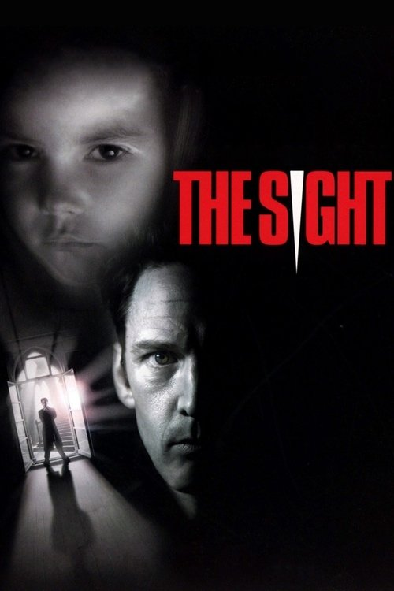

The Sight (2000)
الوصف: The American successful architect Michael Lewis travels to London with his partner and friend, the builder Jake, to refurbish an old hotel. Michael is having successive nightmares, and once in London, he realizes that twenty-one spirits are trying to contact him to solve murders of a serial killer. Michael, with the support of Jake, Detective Pryce and the ghosts, try to avoid the ninth crime and find the serial-killer.
الممثلون
- Andrew McCarthy (Michael Lewis)
- Kevin Tighe (Jake)
- Amanda Redman (Detective Pryce)
- Jessica Oyelowo (Isobel)
- David Roper (Sgt. Eric Mills)
- Honor Blackman (Margaret Smith)
- Alexander Armstrong (Charles Dodgson)
- Julian Firth (Tourist in New York)
- Maurice Roëves (Det. Pryce's boss)
- Clabe Hartley (Ghost in Hotel Parking Garage)
المخرج: Paul W. S. Anderson
المنتج: Chris Symes